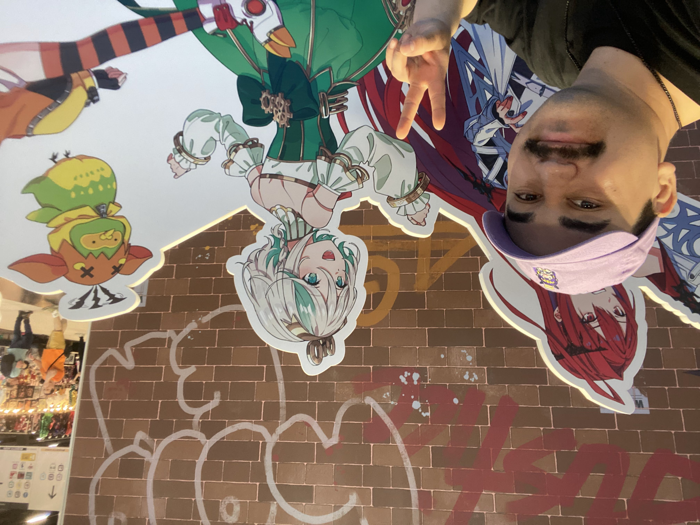

Fran "Aqua"
Howdy! I’m Francisco, and I’m currently learning many hobbies and using this website to journal my experiences along the way. I want to learn a little bit of everything to become a jack of all trades, and inevitably, a master of none. While I don’t plan on making a profession out of my hobbies, I enjoy being hands-on, and that’s the best way I learn. That’s why I built this website from scratch, rather than using one of the website creation/hosting services. While I may not be the best programmer or the best chef, in a room of chefs, I’ll be the best programmer, and in a room of programmers, I’ll be the best chef.
Interests and goals
While I enjoy playing video games such as Valorant, Minecraft, and American truck sim. I am trying to branch out my hobbies ever since I purchased my first house. I will keep personal info close to my chest, I do want to use this platform to share and immortalize any memories/accomplishments I have done. Video games are fun and will continue to play even if I get destroyed by unemployed kids, I have a passion of creating. Wood working is on my list to get better at. I use mostly construction grade lumber mostly due to price and convenience, I fear to learn and fail on expensive lumber. At the moment, I have created a 5ftx3ft workbench that I have used to create a bookshelf, challenge coin display, and a small table to elevate my Cisco 3850 Network switch. Another goal is to create a home lab that I can fully manage on my own. Working in the Cyber Security field, one thing I wish to avoid is to reliance on external entities to manage my home such as Internet of Things (IOT) devices being one of the bigger items I want to maintain full control of. At the time of writing, I have nothing in my home that is sending packets outbound, this is thanks to utilizing my switch and creating my own vpn. There are definetly some IOT I cannot avoid but using external applications but my goal it to just minimize it.
I have monitored and maintained multiple game servers out of pocket for a community of 6,000 people. Most game servers usually have a lifespan of about two months, and I have maintained servers on four different occasions. Throughthese communities, I met a student studying Network Engineering with far more knowledge than I could grasp in such short time frame. After learning some and observing their home lab, I became determined to pursue a hobby or interest in network administration. As days turned into weeks, our friendship grew strong enough for me to pitch the idea of collaborating on server hosting games for our friends. With their knowledge on Cloud management and my experience in game hosting, we believed it would a fun project to get involved with. Although the cloud was a new and unexplored realm for me, we now have plans to create a game server that will be accessible to many of our friends along with other gaming communities, potentially reaching up to 13,000 members. This brief experience has provided me with enough insight to explain why I choose to pursue the hobbies that I do. It is still a long road ahead but it will be an endeavor I will not regret.
I have many ideas I want to do, such as gardening, cooking, and programming, yet I have no idea where to start and that is a primary reason why I have not completed much, but I am expecting to annotate my experiences in this website in order to give myself some structure and to had journal entries of where I am at with said goals.
The Too Long and Didn't Read
I want to build a Home Lab, continue to learn network administration, wood working, programming, and over all being self sufficient. This website will be used to journal and give me structure I may be missing.